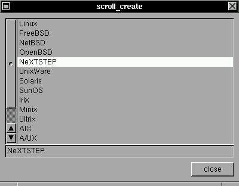

This widget is the good and old (more old than good :) scrollable list. With this widget, you can create a big list of strings and see the list dinamically inside a scrollable window. For now, the code of this widget is considered really a project error in XSTEP 3.x and will be replaced by the code of x/y scroll widget in future.SYNTAX
struct xtree *scroll_create(x,y,w,h,ptr,max,list,f);EXAMPLEint x,y,w,h,*ptr,*max;
char *ptr[];
void (*f)(struct xtree *));With this advanced widget you can create a scrollable list of text, in position (x,y), size (w,h). The 'list' is a array of strings, with 'max' size. The selected option is appointed by 'ptr' and a optional function f() can be called by a mouse click.
This list is a complex object, composed by a main widget, two small buttons ('up' and 'down' :), a scrollbar and the 'list', all independent widgets: informations are just shared by a checksum in 'list', 'ptr' and 'max'.
This is a example of a scrollable list. The list is stored in *text[] list, with size listmax. If you scroll or click in one item, the function "function()" is called (is this case you can copy the item pointed by listptr to any buffer :)#include <xstep.h> char buffer[64], *list[15]={ "Linux", "FreeBSD", "NetBSD", "OpenBSD", "NeXTSTEP", "UnixWare", "Solaris", "SunOS", "Irix", "Minix", "Ultrix", "AIX", "A/UX", "System7", "OpenVMS", }; int listptr,listmax=15; void function(struct xtree *treeptr) { strcpy(buffer,list[listptr]); } void xmain(int n,char *p[]) { window_create(0,0,400,180,"scroll_create"); scroll_create(8,8,-8,-(40+21),&listptr,&listmax,list,function); label_create(8,-40,-8,21,buffer,gray,left); button_create(-8,-8,72,24,"close",window_close); }The variable listptr and listmax can be dinamically changed.